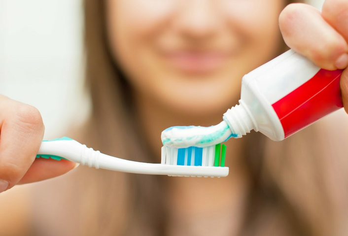

Cavity Prevention and Decay

Dental professionals typically use a CAMBRA assessment to determine what level of risk a patient is in developing cavities. Increased risk factors include poor oral hygiene, frequent snacking or drinking, high sugar exposures, and dry mouth.
Cavities occur when plaque bacteria build up in the mouth and begin breaking down tooth enamel. This process is called demineralization — the first signs that this is occurring are white-spot lesions that appear on the teeth. At this stage, the enamel can be restored with a topical application of fluoride. Fluoride is a naturally occurring mineral that when applied on the teeth, can speed up the reproduction of the tooth enamel’s hydroxyapatite crystals.
If the decay is not halted at this stage, it can progress further into the tooth. Enamel decay will continue, and will begin to appear as a light brown color. Eventually, this decay can process into the dentin, which is the inner, softer layer of the tooth.
The best way to prevent cavities from forming are to refrain from frequent, high sugar or acidic exposures on the teeth, to maintain proper oral hygiene, and to use topical fluoride to help strengthen enamel and repair any incipient cavities.